Kajian Fikih Akhlak #4
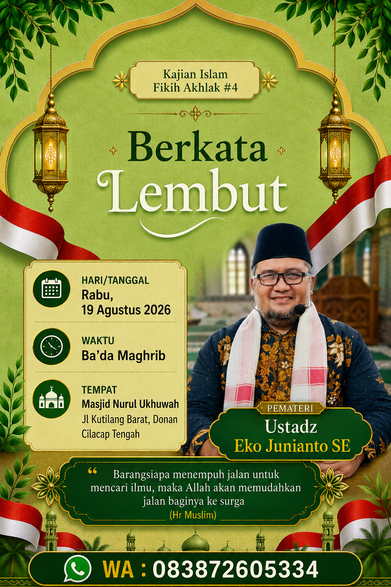
🤲 Diharapkan kehadirannya, semoga bermanfaat!
Tempat Ibadah, Ilmu, dan Ukhuwah Islamiyah
Semoga masjid ini senantiasa menjadi rumah Allah yang diberkahi, tempat tegaknya sholat berjamaah, penyebaran ilmu yang bermanfaat, serta pusat kebaikan dan kerukunan antarwarga. 🤲
* Waktu setempat — dapat berubah setiap hari
MASJID NURUL UKHUWAH
Nomor ID: 01.6.14.01.22.000105

Diterbitkan oleh:
Direktorat Jenderal Bimbingan Masyarakat Islam
Kementerian Agama Republik Indonesia
Terdaftar resmi di SIMAS — Kementerian Agama Indonesia
Masjid Nurul Ukhuwah berdiri di lingkungan RT 01 RW XI, Kelurahan Donan, Kecamatan Cilacap Tengah, Kabupaten Cilacap, Jawa Tengah — Kode Pos 53222. Tanah tempat masjid berdiri telah diwakafkan secara sah dan tercatat resmi dalam Sertifikat Tanah Wakaf seluas 469 meter persegi.
Masjid ini dibangun oleh Ikatan Dai Indonesia (IKADI) pada tahun 2008, dengan dukungan bantuan dana dari Pemerintah Persatuan Emirat Arab melalui organisasi Bulan Sabit Merah Emirat Arab. Oleh masyarakat sekitar, masjid ini juga dikenal dengan sebutan Masjid IKADI.
Pada tanggal 10 Maret 2021, dilakukan reorganisasi pengelolaan sekaligus penetapan nama baru menjadi Masjid Nurul Ukhuwah, disaksikan oleh seluruh jamaah dan pengurus IKADI. Secara musyawarah dan mufakat, IKADI menyerahkan pengelolaan kepada pengurus masjid:
Masjid Nurul Ukhuwah berpegang teguh pada Al-Qur'an dan As-Sunnah sesuai pemahaman Ahlussunnah wal Jama'ah. Masjid ini tidak berafiliasi secara khusus kepada organisasi tertentu, melainkan terbuka untuk seluruh umat Islam.
🔧 Perawatan & Perbaikan Masjid:
.jpg)
Perbaikan atap bocor & pemeliharaan fasilitas masjid
🎬 Klik di sini → Video Perbaikan Pengeras Suara Adzan
🔧 Klik di sini → Persiapan & Perbaikan Tempat Penyembelihan Hewan Qurban
Mengisi waktu dengan mengaji, berzikir, dan memperdalam ilmu agama bersama jamaah.
Menetap di masjid, berzikir, berdoa, dan menunggu waktu Syuruk — waktu yang sangat mulia di antara adzan Subuh hingga terbit matahari.
🤲 Mari bersama-sama meramaikan Masjid Nurul Ukhuwah — agar semakin rame & makmur. Semoga bisa menggerakkan hati seluruh jamaah untuk memanfaatkan momen-momen yang penuh pahala ini.
Bismillahirrahmanirrahim — Semoga Allah meridhoi dan memberkahi setiap detik waktu yang dihabiskan di rumah-Nya. Aamiin! 🤲


.jpg)

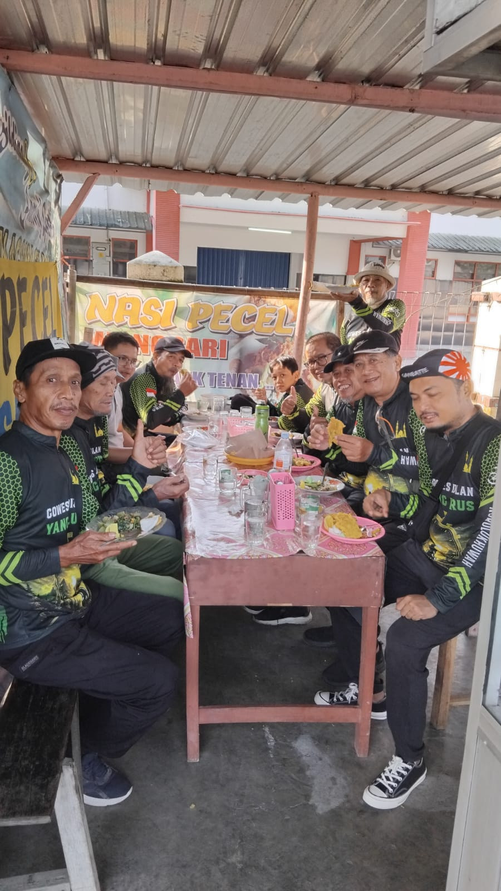
Bersama Ustadzah — Setiap Selasa & Jumat, Pukul 16.00 – 17.30 WIB
✨ Berawal dari hanya 3 orang — Alhamdulillah dalam 4 bulan telah berkembang menjadi 13 orang! Semoga terus bertambah & diberkahi Allah SWT. 🤲
🤲 "Siapa saja yang membaca satu huruf dari Kitabullah, maka baginya satu kebaikan, dan satu kebaikan dilipatkan menjadi sepuluh kali lipat." — (HR. Tirmidzi)

✨ Setiap tahun Alhamdulillah minimal menyembelih 2 ekor sapi — semoga terus bertambah untuk berbagi lebih luas kepada warga sekitar. 🤲
✅ Kami menyembelih sendiri — dengan tim yang telah bersertifikat pelatihan Juleha.
✅ Menggunakan alat-alat standar pelatihan Juleha — dari bilah yang super tajam hingga tali untuk merobohkan hewan, semua sesuai prosedur pelatihan.
✅ Dilatih dari cara merobohkan hingga menyembelih — dengan teknik yang tidak menyakiti hewan dan tetap menghormatinya.
✅ Teknik penyembelihan benar — darah terkuras habis sempurna, sehingga daging lebih bersih, lebih sehat, dan rasanya lebih manis. 🥩
📖 "Dan bagi setiap umat telah Kami tetapkan syariat penyembelihan, agar mereka menyebut nama Allah atas hewan ternak yang telah direzekikan Allah kepada mereka." — (QS. Al-Hajj: 34)
✅ Lulus pelatihan penyembelihan hewan qurban sesuai syariat Islam — bersertifikat resmi


✅ Tim kami yang telah terlatih & bersertifikat — menyembelih sendiri dengan penuh tanggung jawab

📸 Ember Kemasan Daging Shohibul Qurban:

✅ Sudah diikuti oleh 7 calon Shohibul Qurban Alhamdulillah!
💡 Bisa menabung sedikit demi sedikit — sampai Idul Adha cukup untuk berqurban
🤲 Semoga semakin banyak yang bisa berqurban & berbagi kebaikan!
Ingin ikut tabungan qurban? Hubungi pengurus masjid! 📞
🤲 "Maka sholatlah untuk Tuhanmu dan berkorbanlah." — (QS. Al-Kautsar: 2)
Semoga setiap hewan yang disembelih menjadi pahala yang berlipat ganda — untuk Shohibul Qurban, penyembelih, dan semua yang terlibat. Aamiin! 🐂🤲
📸 Ember Kemasan Daging Shohibul Qurban:
✅ Sudah diikuti oleh 7 calon Shohibul Qurban Alhamdulillah!
💡 Bisa menabung sedikit demi sedikit — sampai Idul Adha cukup untuk berqurban
🤲 Semoga semakin banyak yang bisa berqurban & berbagi kebaikan!
Ingin ikut tabungan qurban? Hubungi pengurus masjid! 📞
🤲 "Maka sholatlah untuk Tuhanmu dan berkorbanlah." — (QS. Al-Kautsar: 2)
Semoga setiap hewan yang disembelih menjadi pahala yang berlipat ganda — untuk Shohibul Qurban, penyembelih, dan semua yang terlibat. Aamiin! 🐂🤲
✨ Setiap tahun Alhamdulillah minimal menyembelih 2 ekor sapi — semoga terus bertambah untuk berbagi lebih luas kepada warga sekitar. 🤲
✅ Kami menyembelih sendiri — dengan tim yang telah bersertifikat pelatihan Juleha.
✅ Menggunakan alat-alat standar pelatihan Juleha — dari bilah yang super tajam hingga tali untuk merobohkan hewan, semua sesuai prosedur pelatihan.
✅ Dilatih dari cara merobohkan hingga menyembelih — dengan teknik yang tidak menyakiti hewan dan tetap menghormatinya.
✅ Teknik penyembelihan benar — darah terkuras habis sempurna, sehingga daging lebih bersih, lebih sehat, dan rasanya lebih manis. 🥩
📖 "Dan bagi setiap umat telah Kami tetapkan syariat penyembelihan, agar mereka menyebut nama Allah atas hewan ternak yang telah direzekikan Allah kepada mereka." — (QS. Al-Hajj: 34)
✅ Lulus pelatihan penyembelihan hewan qurban sesuai syariat Islam — bersertifikat resmi
✅ Tim kami yang telah terlatih & bersertifikat — menyembelih sendiri dengan penuh tanggung jawab
📸 Ember Kemasan Daging Shohibul Qurban:
✅ Sudah diikuti oleh 7 calon Shohibul Qurban Alhamdulillah!
💡 Bisa menabung sedikit demi sedikit — sampai Idul Adha cukup untuk berqurban
🤲 Semoga semakin banyak yang bisa berqurban & berbagi kebaikan!
Ingin ikut tabungan qurban? Hubungi pengurus masjid! 📞
🤲 "Maka sholatlah untuk Tuhanmu dan berkorbanlah." — (QS. Al-Kautsar: 2)
Semoga setiap hewan yang disembelih menjadi pahala yang berlipat ganda — untuk Shohibul Qurban, penyembelih, dan semua yang terlibat. Aamiin! 🐂🤲
📸 Ember Kemasan Daging Shohibul Qurban:
✅ Sudah diikuti oleh 7 calon Shohibul Qurban Alhamdulillah!
💡 Bisa menabung sedikit demi sedikit — sampai Idul Adha cukup untuk berqurban
🤲 Semoga semakin banyak yang bisa berqurban & berbagi kebaikan!
Ingin ikut tabungan qurban? Hubungi pengurus masjid! 📞
🤲 "Maka sholatlah untuk Tuhanmu dan berkorbanlah." — (QS. Al-Kautsar: 2)
Semoga setiap hewan yang disembelih menjadi pahala yang berlipat ganda — untuk Shohibul Qurban, penyembelih, dan semua yang terlibat. Aamiin! 🐂🤲


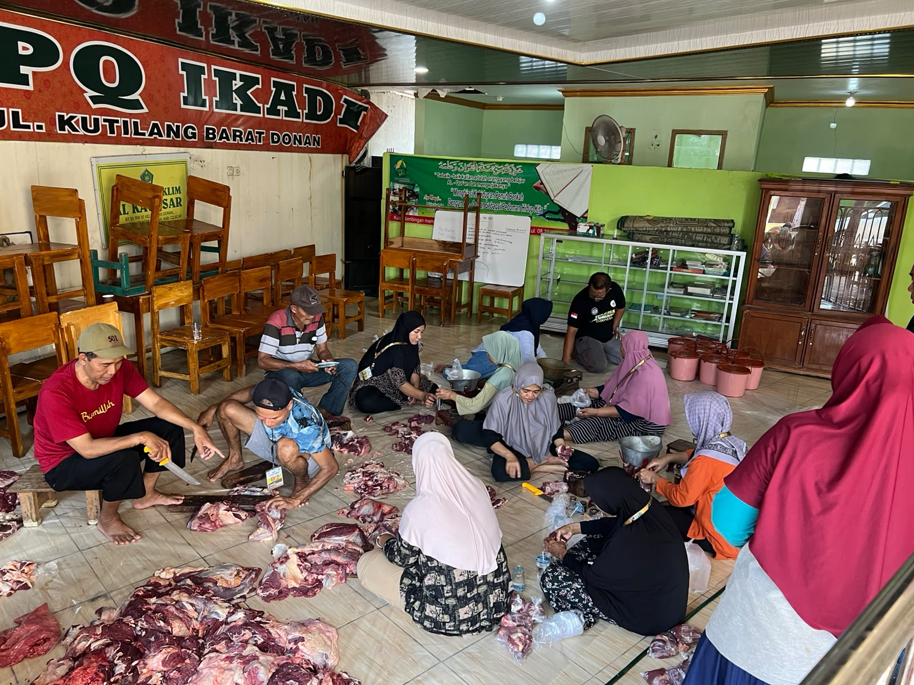
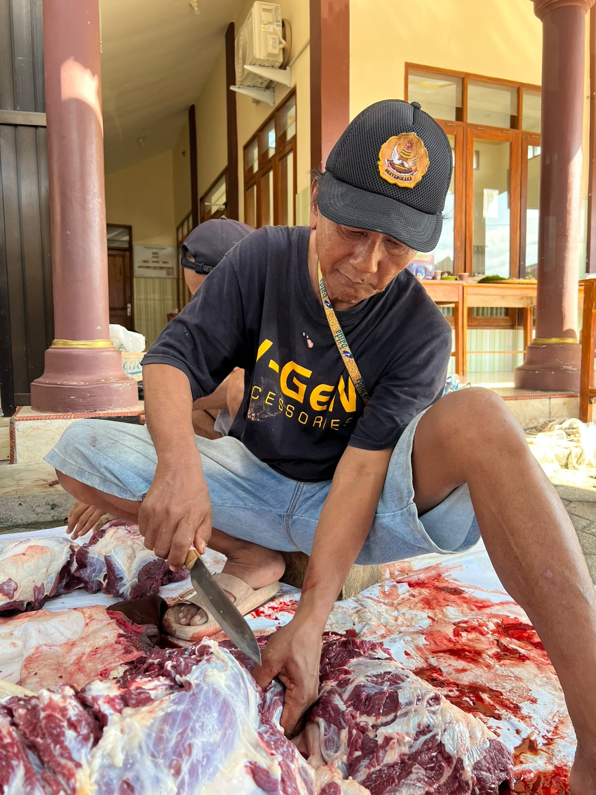
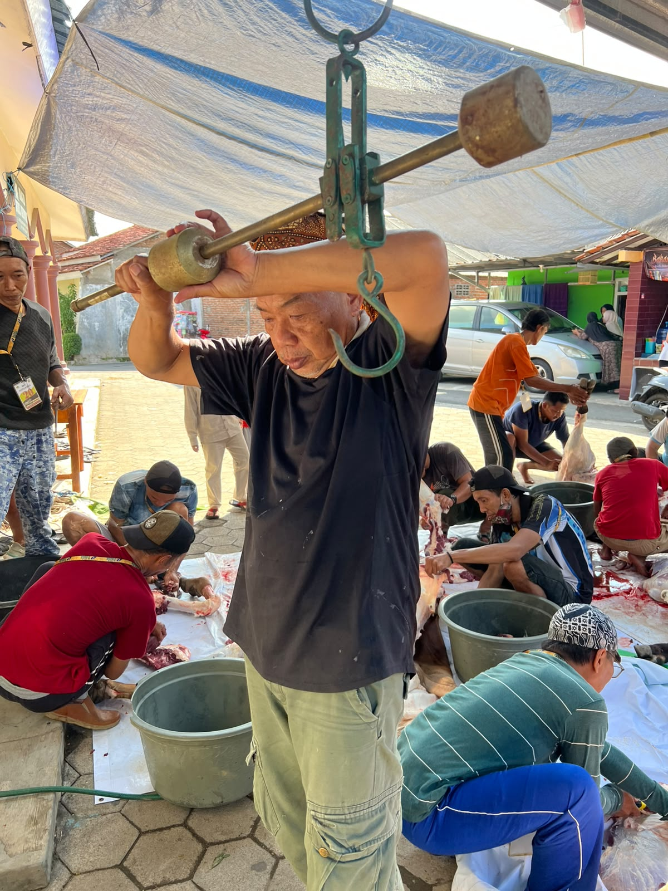
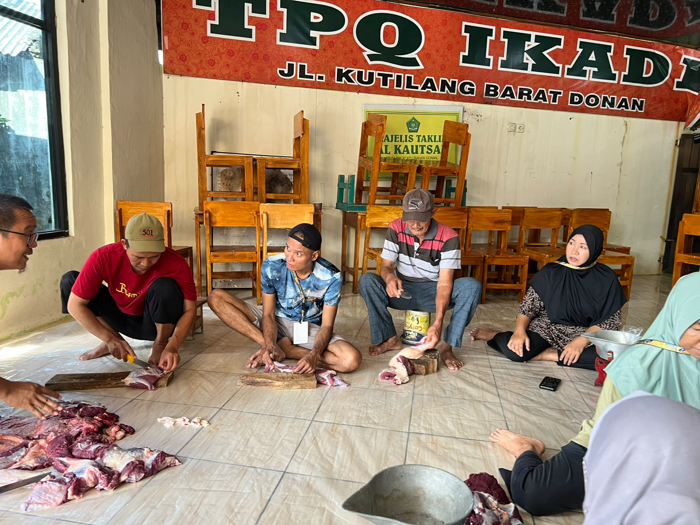
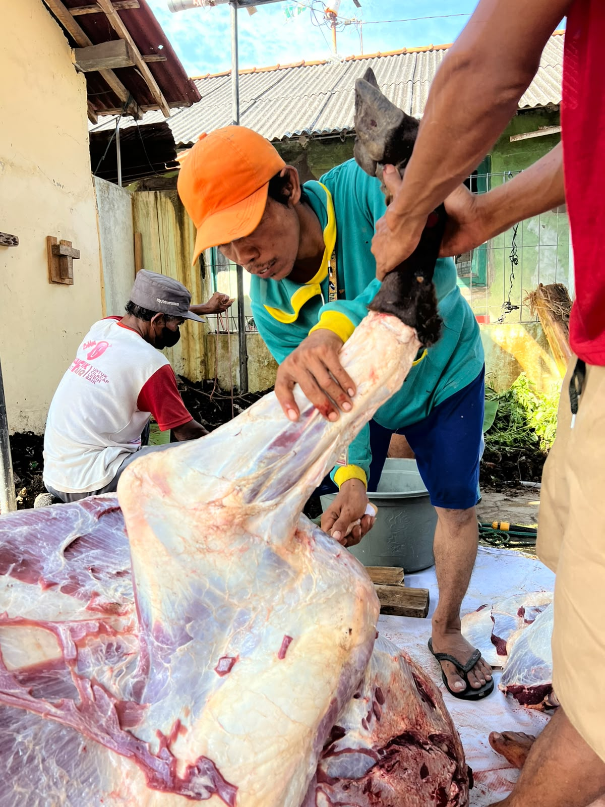
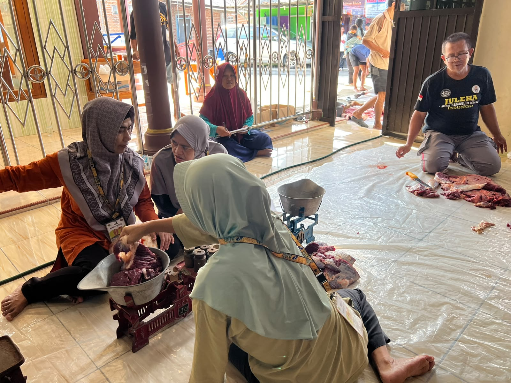
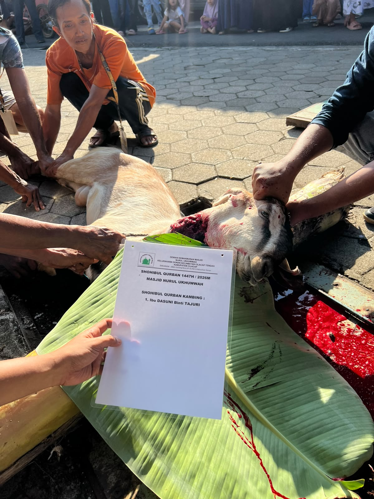
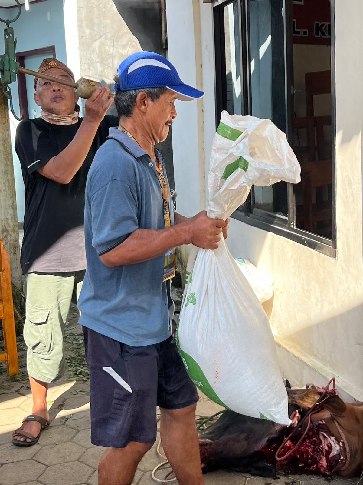
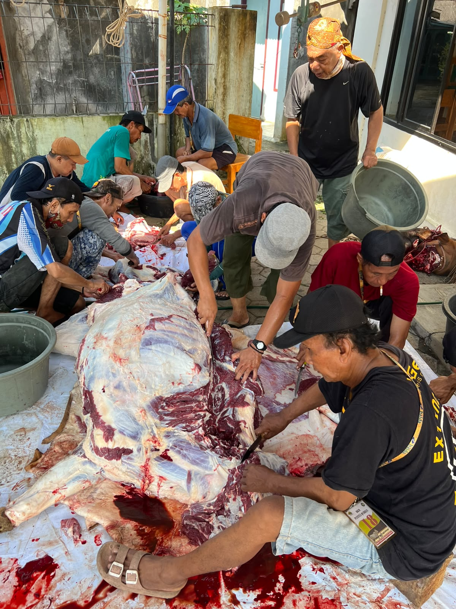
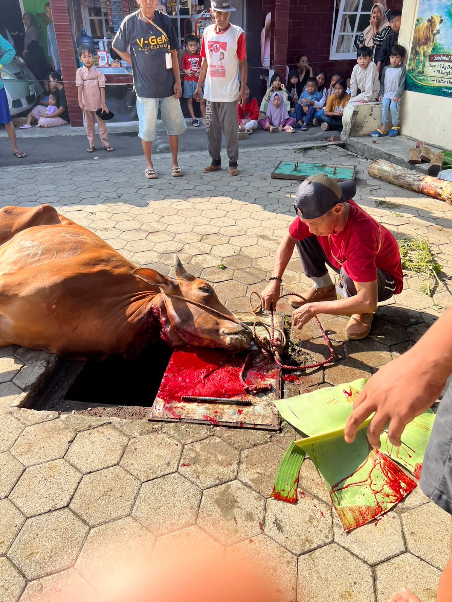
📍 Alamat Lengkap:
Jl. Kutilang Barat, RT 01 RW XI, Kelurahan Donan, Kecamatan Cilacap Tengah, Kabupaten Cilacap, Jawa Tengah — Kode Pos 53222
📞 Pengurus Masjid:
• Bpk. Sulistiyono — Ketua +62 813-2753-0681
• Bpk. Aditia Nugroho — Sekretaris +62 813-1150-9584
• Bpk. Supriyatno — Bendahara +62 838-7260-5334
Masjid Nurul Ukhuwah senantiasa dibantu oleh para Ustadz dan Ustadzah yang dengan tulus dan ikhlas menyampaikan ilmu Al-Qur'an, Fikih, dan Tajwid kepada kita semua. Mereka hadir tanpa mengharap imbalan, semata-mata mengharap ridha Allah SWT.
🤲 Bagi siapa saja yang ingin menyampaikan penghormatan secara sukarela atas ilmu yang telah diberikan — dapat disalurkan melalui rekening masjid dengan keterangan: "Penghormatan Ilmu".
💰 Infak Kaleng Bulanan:
Hasil pengumpulan infak kaleng dari jamaah dan warga sekitar — dihitung setiap bulan untuk keperluan masjid dan sosial. Terbuka untuk umum, siapa saja boleh ikut serta.
💳 Rekening Donasi Masjid — Terbuka untuk Umum:
Bank Syariah Indonesia (BSI) | No. Rekening: 7205811871
a.n. Masjid Nurul Ukhuwah
🤲 Semoga Allah menerima setiap kebaikan dan menjadikan masjid ini senantiasa bermanfaat luas bagi semua orang.